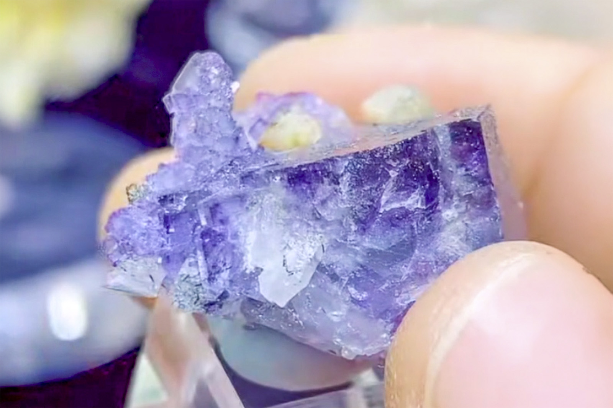

Fluorite with Minor Quartz and Dolomite
"Quartz Penetrating Purple Fluorite TN"
III-09801
Yaogangxian Mine, Yaogangxian W-Sn ore field, Yizhang Co., Chenzhou, Hunan, China
Purchased 3/18/2026 from 7 Minerals Mine for $15.00
Core Collection • In Collection
Details
Storage Type: Flat
Storage Location: 000 Unassigned
Size class: Thumbnail (0)
Dimensions: 2.9 × 2.3 × 2.2 cm
Mass: 11.74 g
Luster: Average, Vitreous